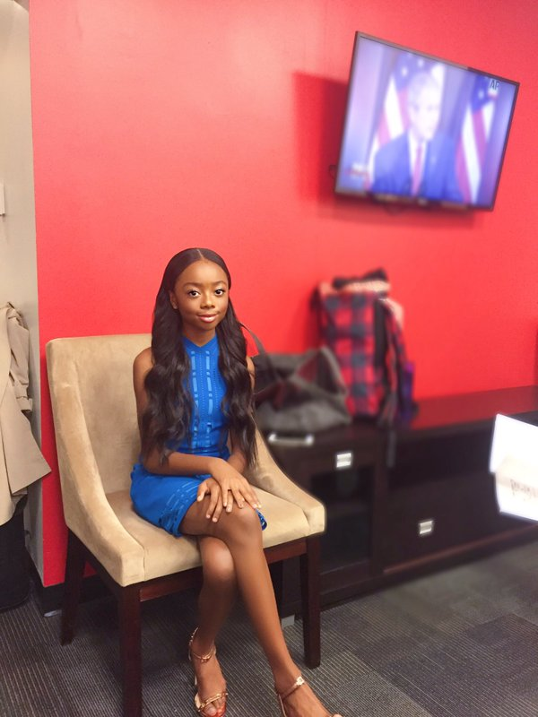

Welcome to more information
What is a meme?
I have spent all this work handpicking and showcasing popular memes, but now it's time to explain what a meme even is. According to the dictionary, a meme is,
A cultural item that is transmitted by repetition and replication in a manner analogous to the biological transmission of genes. A cultural item in the form of an image, video, phrase, etc., that is spread via the Internet and often altered in a creative or humorous way.Although we iconically think of memes as images or gifs, mediums such as dance crazes (like the Harlem Shake), videos (such as the #MannequinChallenge), individuals (such as Ken Bone), and even hashtags are also considered as memes. These small technological artifacts are then circulated through the world via channels such as social media, emails, news sources, blogs, and Internet subcultures, just to name a few. This site specifically focuses on memes that are visual images and/or gifs that have text, also known as captions, laid atop that are then circulated throughout the internet. Because the internet is accessible globally, memes become cultural symbols as they are shared around the world. A kid in Germany looking at the "Crying Jordan" meme and the "Ellen Crying" meme will understand that American celebrities are also susceptible to humiliation. Cultural values such as humiliation being okay and celebrated in America is just one of many that spreads.
Evolution of memes
Due to their popularity and prominence in pop culture, it may feel as if memes have been around for ages, but they simply haven't beause the technology to support them hasn't been around for long either. In the late 80s, the Internet was still in a phase of development, but video footage was easily shared and would become viral due to VHS advancements. As time passed, the Internet was growing and becoming more powerful and easier to use to share content. In the late 90s, an art student animated 4 gif hampsters to dance, added music, and looped the movements in HTML, and created the first unofficial meme called Hampsterdance. The early 2000s is when we started seeing the visual memes that we know and love today. Candid pictures of cats would receive funny text captions, cute baby videos like the "Charlie bit me" video became popular and more visible online. In addition to these memes, chain e-mails also become popularized. Chain e-mails are e-mails that curse bad luck or promise great fortunes upon you if you shared the e-mail with ten or so of your friends (today we call that spam). Today, we can how memes have evolved from cat pictures and baby videos to include celebrity candids, movie stills, or a television show still. Furthermore, because memes are so popuarlized, those who are (un)fortunate enough to become memes, become internet sensations and their image will live probably forever.
The Gallery
"Crying Mike"

Known as the "Crying Mike" or "Sad Jordan", this meme has immortalized Michael Jordan's sad facial expression during his induction ceremony into the Basketball Hall of Fame back in 2009. The meme is commonly used to reference misfortunes of athletes and normal people alike.
Caption examples:
"When Kobe takes your job"
"When you get an invite to the company finances meeting"
"When you arrive in the library at 3, study for 5 hours, but it's only 3:15"
Obama-Biden memes
Obama-Biden memes brought comic relief to this year's tulmultuous election year. The image shown is one of several candid pictures of the former President and Vice President. Despite the variety of images used, these memes often showcased Biden's love for President Obama or Biden's hesistance to leave the White House.
Caption example:
Biden:"Check out this apartment I found in Georgetown for us."
Obama:"Joe, I don't think you understand."
Biden:"Is the bunk bed too much?"
"Cash Me Ousside, HowBow Dah"
"Cash Me Ousside, HowBow Dah" is the newest meme to circulate through pop culture. The meme is a quote from a guest on The Dr.Phil Show, who challenged the studio audience to a fight and said, "Catch me outside, how about that," but due to her thick accent sounded more like, "Cash me ousside, howbow dah." The meme has spread like wildfire.
Caption examples:
"When somebody says the last piece of chicken is there's"
"when the weatherman predicts sunshine but it snows"
"Protesters be like"
"But That's None of My Business"

This meme featuring Kermit the Frog from The Muppets will tell you that whatever's going on is none of their business, but the meme embodies a sense of sarcastic judgement. The image has been circulated and superimposed with captions that make fun of someone's questionable decisions; using the punchline that ,"it's none of my business."
Caption examples:
"You wore that outfit yesterday, but that's none of my business"
"My student asked for extra credit, but hasn't come to class in 2 weeks"
"You say you're a fun professor, but assigned us a 10pg paper over break"
"Inner Me Kermit"

Known as "Inner Me Kermit," or "Evil Kermit." This meme lets people unlease their dark side. This photo captures the mental image of having someone having an angel on one shoulder and a devil on the other, with the hooded Kermit representing your evil side. This photo is often superimposed with a "good" decision and a "bad", or unpopular decision.
Caption example:
Me: *drops sandwich on the floor*
Inner me: "Eat it, five second rule"
"Skai Jackson"
 This meme of Skai Jackson, an up-and-coming Disney star, was taken before one of her television appreances and her Twitter followers quickly replied and retweeted captions, turning her into an overnight meme. Her facial expression in this picture is what we would classify as a "petty" expression, or a face of someone dealing with a trivial matter. The meme quickly grew in popularity due to its circulation on Twitter, especially in the online community known as "Black Twitter" which caters to the African-American community.
Caption examples:
"When you give your friend advice but they didn't take it, and they come crying to you"
"Meeting your professor during finals week to explain why you need extra credit"
"Meeting your group partners on presentation day after they missed the presentation rehearsal"
"Salt Bae"

The "Salt Bae" meme is also a recently popular meme; it refers to a Turkish chef who was made famous for his cooking video in which he flamboyantly salts his steak and has earned a place in the hearts of millions as salt bae. This meme is also a gif, or animated image, because it captures his exaggerated movements.
Caption examples:
"When you use thus in an essay"
"When you beat your weightlifting record by 1 pound"
"When you write two pages and one parapgrah for a two page paper"
"Arthur Fist"

This meme began circulating on the interwebs around early August, and is a childhood classic for most millenials. The fist belongs to Arthur, an aardvark on an animated chilren's show called Arthur. The first person to tweet this picture, Twitter user @AlmostJT, wrote that the fist seemed to hold a lot fo emotion and that the picture was really relatable. Millions of other people must have agreed, because memes featuring this fist flooded Facebook, Twitter, and even Instagram under #arthurfist.
Caption examples:
"When people say Harambe was just a gorilla"
"When bae reads your message but doesn't respond"
"When you offer to share your chicken nuggets and they say yes"
"Ellen Crying"

In November 2016, President Barack Obama presented popular talk show host Ellen DeGeneres' with the Presidental Medal of Freedom; her tearful reaction to the award earned her place in meme history. This meme is commonly connected with relatable moments of happy tears, joy, or sarcastic joy.
Caption examples:
"When you made a 71 in the class"
"when your girlfriend eats all the fries but there are bag fries left"
"When you make it through your first shot without your mom"
Take me to a meme
Click here to be taken to a website with more memes,or click HERE to be taken to another website of memes.